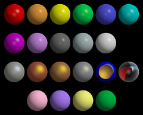
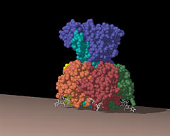
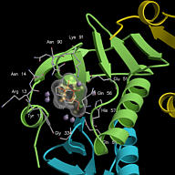

Example 1
Illustrates the use of material definitions to alter object properties,
and file indirection via the search path defined in environmental
variable R3D_LIB.
|

Example 2
A figure composed using the rods and balls
utility programs.
|

Examples 3, 4 and 5
Worked examples of converting and combining Molscript and GRASP output
files into a single Raster3D scene.
|
 Back to top
Back to top